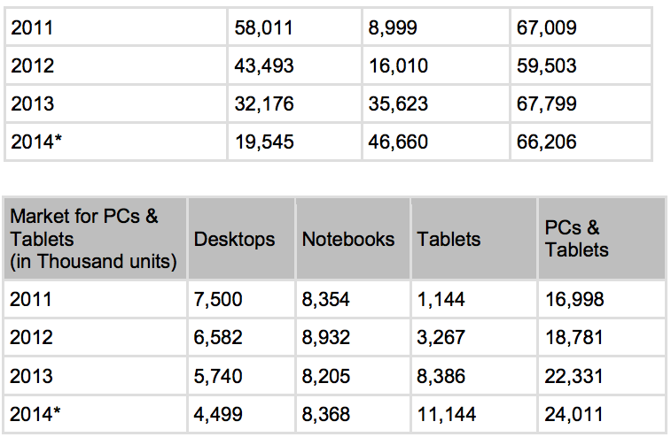

The Brazilian Electric -Electronic Association (ABINEE) has indicated that the IT industry will continue positive growth, andin 2014 should continue as the “Year of Tablets and Smartphones”. According to ABINEE, sales growth of the entire electronic sector was driven by such new consumer items available in the market. With the increasing use of portable devices, Brazilian companies are adopting the Bring your Own Device-concept (BYOD) IT management strategy, which will also be of great benefit to the industry.
The Government of Brazil (GOB) has created mechanisms and incentives to attract manufacturers of tablets to install production plants in Brazil (Law 12.507).


Storage equipment will continue to be in demand in Brazil, as the volume of data rises. There are increasing numbers of companies seeking information and knowledge on cloud computing, Platform as a Service (PaaS) and Infrastructure as a Service (IaaS); consequently, the need of servers and storage equipment will follow. Governments and private entities use such technology for their surveillance cameras, content management for libraries and museums, as well as digitalization of the judicial system. The market for personal storage devices such as Network Access Storage (NAS) for consumers will also expand. Demand for 3-D printing is also expected to increase within the next three years according to trade sources.
Market Entry
The majority of computer distributors in Brazil are national companies; however, foreign distributors have been partnering with these existing distributors of late, in order to become more competitive and satisfy local presence requirements.
Foreign companies should consider pursuing a distribution or representation agreement with well-established local companies, who are capable of navigating the business environment in Brazil and have easier access to potential end-users. Furthermore, foreign companies interested in participating in public bids must have an established local representative.